目次
Is Ego Status All You Need for Open-Loop End-to-End Autonomous Driving?
Zhiqi Li1,2*、Zhiding Yu2†、Shiyi Lan2、Jiahan Li1、Jan Kautz2、Tong Lu1、Jose M. Alvarez2
1南京大学 新型ソフトウェア技術国家重点実験室（National Key Lab for Novel Software Technology, Nanjing University） 2NVIDIA
arXiv:2312.03031v2 [cs.CV]、2024年6月2日
翻訳について：原文 PDF は
22_Ego_Status_2312.03031.pdf（全 14 ページ）。本文、図の説明、図中ラベル、表、脚注、付録を訳出し、論文タイトルと参考文献は原文のまま掲載。図は原図を掲載し、英語ラベルの日本語訳を併記した。数式・数値・引用番号・コードの識別子は原文を維持。原文の記述に関する補足は「訳注」と明示し、本文と区別している。
*NVIDIA でのインターンシップ中に行った研究。†責任著者：zhidingy@nvidia.com。
要旨
エンドツーエンド自動運転は、フルスタックの観点から自律性を目指す有望な研究方向として近年登場した。この流れに沿って、最新の研究の多くは nuScenes 上の開ループ評価の設定に従って計画（プランニング）挙動を調べている。本論文では、徹底的な分析を行い細部に潜むさらなる問題点を解き明かすことで、この問題をより深く掘り下げる。我々はまず、比較的単純な運転シナリオを特徴とする nuScenes データセットでは、自車の速度などの自車状態（ego status）を取り込んだエンドツーエンドモデルにおいて知覚情報が十分に活用されないことを観察した。これらのモデルは、将来の経路計画を主として自車の状態に頼る傾向がある。データセットの限界に加えて、現行の指標が計画の品質を包括的に評価しておらず、既存ベンチマークから導かれる結論に偏りが生じうることにも我々は気づいた。この問題に対処するため、予測された軌跡が道路に沿っているかどうかを評価する新しい指標を導入する。さらに、知覚アノテーションに頼らずに競争力のある結果を達成できる簡素なベースラインを提案する。ベンチマークと指標の現状の限界を踏まえ、我々はコミュニティに対し、関連する主流の研究を再評価し、最先端（state-of-the-art）の追求を続けることが説得力のある普遍的な結論をもたらすかどうかについて慎重になることを提案する。コードとモデルは https://github.com/NVlabs/BEV-Planner で公開している。
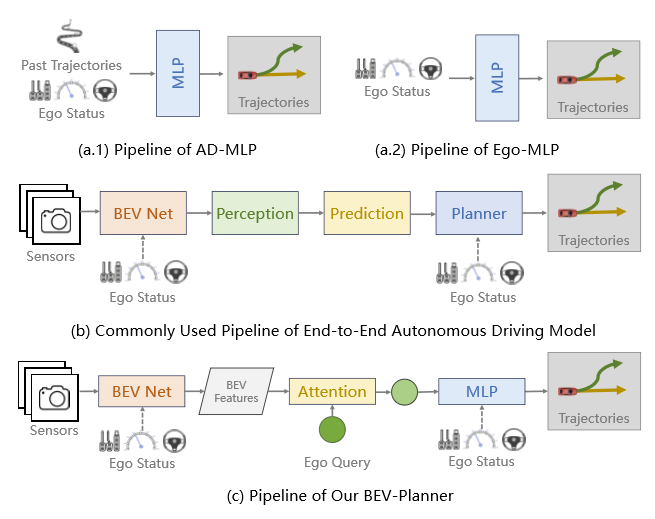
図1：（a）AD-MLP は自車状態と過去軌跡の GT の両方を入力として用いる。我々の再現版（Ego-MLP）は過去軌跡を取り除いている。（b）既存のエンドツーエンド自動運転パイプラインは、知覚・予測・計画の各モジュールから構成される。自車状態は鳥瞰図（BEV）生成モジュールに組み込むことも、計画モジュール内に組み込むこともできる。（c）既存手法と比較するための簡素なベースラインを設計した。この簡素なベースラインは知覚モジュールや予測モジュールを利用せず、BEV 特徴量に基づいて最終的な軌跡を直接予測する。
図中ラベル：Past Trajectories＝過去軌跡、Ego Status＝自車状態、Trajectories＝軌跡、Pipeline of AD-MLP＝AD-MLP のパイプライン、Pipeline of Ego-MLP＝Ego-MLP のパイプライン、Sensors＝センサ、Perception＝知覚、Prediction＝予測、Planner＝プランナ、Commonly Used Pipeline of End-to-End Autonomous Driving Model＝エンドツーエンド自動運転モデルで一般的に用いられるパイプライン、BEV Features＝BEV 特徴量、Attention＝注意機構、Ego Query＝自車クエリ、Pipeline of Our BEV-Planner＝我々の BEV-Planner のパイプライン
1 はじめに
エンドツーエンド自動運転は、知覚と計画をフルスタックの形で統合的に扱うことを目指している［1, 5, 32, 35］。その根底にある動機は、自動運転車（AV）の知覚を、特定の知覚指標に過剰適合させるのではなく、目的（計画）のための手段として評価することにある。
知覚とは異なり、計画は一般にはるかに自由度が高く、定量化が難しい［6, 7］。計画のこの自由度の高い性質からすれば、理想的には、他のエージェントが自車の挙動に反応でき、生のセンサデータもそれに応じて変化しうる閉ループ評価の設定が望ましい。しかし、閉ループシミュレータ［8, 19］におけるエージェントの挙動モデリングと実世界データのシミュレーションは、いずれも現在まで困難な未解決問題のままである。そのため、閉ループ評価は実世界との間に相当なドメインギャップを必然的に持ち込んでしまう。
一方、開ループ評価は、人間の運転を正解（ground truth）として扱い、計画を模倣学習として定式化することを目指す［13］。この定式化により、単純なログ再生によって実世界データセットを容易に利用でき、シミュレーションに起因するドメインギャップを回避できる。また、シミュレーションでは高い忠実度で生成することがしばしば難しい、複雑で多様な交通シナリオでモデルを学習・検証できるといった利点もある［5］。これらの利点から、実世界データセットを用いた開ループのエンドツーエンド自動運転に焦点を当てた研究が数多く蓄積されている［2, 12, 13, 16, 43］。
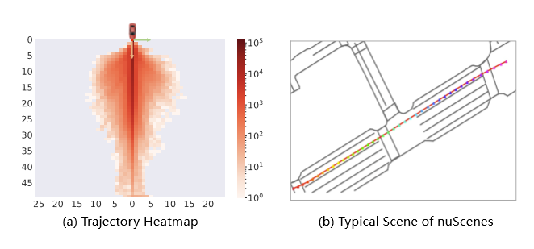
図2：（a）nuScenes データセットにおける自車軌跡のヒートマップ。（b）nuScenes データセットのシーンの大部分は、直進走行の状況で構成されている。
図中ラベル：Trajectory Heatmap＝軌跡ヒートマップ、Typical Scene of nuScenes＝nuScenes の典型的なシーン
現在主流のエンドツーエンド自動運転手法［12, 13, 16, 43］は、計画挙動の開ループ評価に一般に nuScenes［2］を用いている。たとえば UniAD［13］は、さまざまな知覚タスクモジュールが最終的な計画挙動に与える影響を調べている。しかし AD-MLP［45］は最近、単純な MLP ネットワークでも、自車状態の情報のみに頼って最先端の計画結果を達成できることを指摘した。このことから、我々は次の重要な問いを立てるに至った。
開ループのエンドツーエンド自動運転に必要なのは自車状態だけなのか？
現行のベンチマークで自車状態を用いることの長所と短所の両方を考慮すると、我々の答えはイエスでもありノーでもある。
イエス。自車状態に含まれる速度、加速度、ヨー角といった情報は、明らかに計画タスクに有益であるはずである。これを検証するため、我々は AD-MLP の未解決の issue1 を修正し、ラベル漏洩の可能性を防ぐために過去軌跡の正解（GT）の使用を取り除いた。我々の再現モデル Ego-MLP（図1 a.2）は自車状態のみに頼っており、既存の L2 距離と衝突率の指標において最先端手法と同等である。もう一つの観察は、計画モジュール内に自車状態の情報を組み込んでいる既存手法［13, 16, 43］だけが Ego-MLP と同等の結果を得られるということである。これらの手法は追加の知覚情報（トラッキング、HD マップなど）を用いているにもかかわらず、Ego-MLP に対する優位性を示していない。これらの観察は、エンドツーエンド自動運転の開ループ評価において自車状態が支配的な役割を果たしていることを裏付けている。
そしてノー。一方で、安全性が重要なアプリケーションである自動運転が、意思決定を自車状態のみに依存すべきでないことも明らかである。では、なぜ自車状態のみを用いて最先端の計画結果を達成できるという現象が起こるのか。この問いに答えるため、我々は既存の開ループのエンドツーエンド自動運転手法を対象とした包括的な一連の分析を提示する。データセット、評価指標、個々のモデル実装に関する側面を含め、既存研究における主要な欠点を特定する。以下、本節の残りでこれらの欠点を列挙し詳述する。
不均衡なデータセット。NuScenes は開ループ評価タスクで一般的に用いられるベンチマークである［11–13, 16, 17, 43］。しかし我々の分析によれば、図2 の軌跡分布に表れているように、nuScenes のデータの 73.9% は直進走行のシナリオである。これらの直進シナリオでは、ほとんどの場合、現在の速度、方向、または旋回率を維持するだけで十分でありうる。したがって、自車状態の情報は計画タスクに当てはめるための近道（ショートカット）として容易に利用でき、これが nuScenes における Ego-MLP の高い性能につながっている。
既存の指標は包括的ではない。nuScenes データの残り 26.1% は、より困難な運転シナリオを含んでおり、計画挙動のより良いベンチマークとなる可能性がある。しかし我々は、予測と計画 GT の間の L2 距離や、自車と周囲の障害物との衝突率といった、現在広く用いられている指標では、モデルの計画挙動の品質を正確に測れないと主張する。さまざまな手法が生成した多数の予測軌跡を可視化した結果、道路からはみ出すといった非常に危険な軌跡が、既存の指標では厳しく罰せられない場合があることに気づいた。この問題に対応して、予測軌跡と道路境界との交差率を計算する新しい指標を導入する。道路境界との交差率に注目すると、ベンチマークの様相は大きく変わる。この新しい指標の観点では、Ego-MLP は UniAD よりも頻繁に道路から逸脱する軌跡を予測する傾向がある。
運転の論理に反する自車状態バイアス。自車状態が過剰適合を引き起こす潜在的な原因であることに加えて、我々はさらに興味深い現象を観察した。我々の実験結果は、場合によっては、既存のエンドツーエンド自動運転フレームワークから視覚入力を完全に取り除いても、計画挙動が大きく劣化しないことを示唆している。これは、知覚が計画に有用な情報を提供すると期待されるという意味で、基本的な運転の論理に反する。たとえば VAD［16］においてカメラ入力をすべて空白にすると、自車状態が存在する場合、知覚モジュールは完全に機能しなくなるが計画の劣化はわずかである。しかし、入力する自車速度を変更すると、最終的に予測される軌跡に大きな影響を与えうる。
結論として、我々は、エンドツーエンド自動運転における近年の取り組みと nuScenes 上でのそれらの最先端スコアは、単純な運転シナリオが大半を占めることと相まって、自車状態への過度の依存によってもたらされている可能性が高いと推測する。さらに、現行の指標はモデルが予測した軌跡の品質を包括的に評価するには不十分である。これらの未解決の問題と欠点は、計画タスクの潜在的な複雑さを過小に示し、開ループのエンドツーエンド自動運転に必要なのは自車状態だけであるという誤解を招く印象を生み出してきた可能性がある。
現在の開ループのエンドツーエンド自動運転研究において自車状態が干渉しうることは、もう一つの疑問を提起する。すなわち、モデル全体から自車状態を取り除くことで、この影響を打ち消すことは可能なのか。しかし、自車状態の影響を除外したとしても、nuScenes データセットに基づく開ループ自動運転研究の信頼性は依然として疑わしいことに注意することが重要である。
2 関連研究
2.1 BEV 知覚
近年、BEV に基づく自動運転の知覚手法は大きく進歩した。Lift-Splat-Shoot［31］は、潜在的な深度分布を用いて視点変換を行うことを初めて提案した。BEVFormer［22］は BEV 知覚に時間的な手がかりを導入し、3D 検出性能を大きく向上させた。後続の一連の研究［14, 15, 21, 23, 24, 26–28, 30, 41, 42］は、より正確な深度情報を得たり時間情報をより有効に活用したりすることで、より正確な 3D 知覚結果を得ている。時間情報を取り込むには、通常、異なるタイムステップ間で特徴量の位置合わせ（アライメント）が必要となる［14, 18, 22, 39］。位置合わせの過程では、自車状態は入力特徴量の中に暗黙的に符号化される［39］か、BEV 特徴量を平行移動するために明示的に用いられる［14］。手法［4, 20, 25, 29, 38, 44］は BEV 特徴量に基づく地図知覚を探求した。
2.2 エンドツーエンド自動運転
現代の自動運転システムは通常、知覚、予測、計画という 3 つの主要タスクに分割される。生のセンサデータから計画軌跡や運転コマンドへの学習を直接行うエンドツーエンド自動運転は、手作業による特徴抽出を不要にし、効率的なデータ活用と多様な運転シナリオへの適応性をもたらす。シミュレータ［8, 19］内での閉ループのエンドツーエンド運転に焦点を当てた研究群［34, 37, 40］が存在する。しかし、シミュレータ環境と実世界の間には、特にセンサデータとエージェントの運動状態に関してドメインギャップが残っている。近年、開ループのエンドツーエンド自動運転がより注目を集めている。中間タスクの学習を含むエンドツーエンド自動運転手法［3, 9, 13, 16, 33, 43］は、最終的な計画性能の向上における有効性を主張している。AD-MLP［45］は nuScenes におけるデータ分布の不均衡の問題を指摘し、自車状態のみをモデル入力として用いて最先端の性能を達成しようと試みた。しかし AD-MLP は、自車の過去軌跡を入力として利用することの恩恵を受けている。既存手法のいずれも自車の過去軌跡の情報を用いていないことを踏まえると、開ループ自動運転において過去軌跡を用いることには議論の余地があると我々は主張する。なぜなら、この過去軌跡はモデル自身が生成したものではなく、実際の人間のドライバーによって生成されたものだからである。
3 提案する BEV-Planner
実のところ、しばしばベースラインとして用いられる先行手法 ST-P3［12］は、学習と評価の際に部分的に誤った GT データを用いている2。したがって、他の手法と ST-P3 を比較する際には、導かれる結論の妥当性を慎重に評価しなければならない。そのため本論文では、既存手法と比較するためのベースライン手法を再設計する必要がある。同時に、自車状態の影響をよりよく調べるためには、比較的明快なベースライン手法も必要である。これらを考慮して、我々は本論文で、図1(c) に示すように、BEV-Planner と名付けた非常に簡素なベースラインを設計した。我々のパイプラインでは、主に先行手法［12, 14, 21］に従って、まず BEV 特徴量を生成し、それを過去の BEV 特徴量と連結する。異なるタイムステップの BEV 特徴量を連結する際、特徴量の位置合わせは行っていないことに注意されたい。BEV 特徴量を得た後、BEV 特徴量と、学習可能な埋め込みである自車クエリとの間で直接クロスアテンション［36］を行う。最終的な軌跡は、精緻化された自車クエリに基づいて MLP によって予測される。この過程は次のように定式化できる。
\[ \tau = \mathbf{MLP}(\mathbf{attn}(q=Q, k=B, v=B)), \tag{1} \]
ここで \(Q\) は自車クエリ、\(B\) は時間融合後の BEV 特徴量である。\(\tau\) は最終的に予測される軌跡である。
既存手法と条件を揃えるため、自車状態を BEV モジュールまたはプランナモジュールに組み込んだベースライン手法も設計した。自車状態を BEV に組み込む方策は先行手法［13, 16, 22］に倣っている。自車状態をプランナに組み込む方策は、自車クエリを自車状態を含むベクトルと直接連結するものである。
既存手法と比べて、この簡素な手法はバウンディングボックス、トラッキング ID、HD マップなどを含む人手でラベル付けされたデータを一切必要としない。この提案ベースラインでは、軌跡の教師信号として L1 損失を 1 つだけ用いる。強調しておきたいのは、我々の提案するベースライン手法は、十分な制約と相互運用性を提供する点で不十分であるため、実世界での運用を意図したものではないということである。
4 実験
4.1 実装の詳細
我々のベースラインは R50 バックボーン［10］を用いる。入力解像度は 256×704 であり、より複雑なパイプラインを用いる既存手法［13, 16］よりも小さい。BEV の解像度は 128×128 で、知覚範囲は約 50 メートルである。過去の BEV 特徴量を用いるベースラインでは、過去 4 タイムステップの BEV 特徴量を、位置合わせを行わずにチャネル次元に沿って現在の BEV 特徴量へ直接連結する。さらに手法［14］の BEV エンコーダを用いてチャネル次元を 256 に圧縮する。モデルは 8 基の V100 GPU 上で、バッチサイズ 32、学習率 1e-4 で 12 エポック学習する。
4.2 評価指標
付録では、現在一般的に用いられている衝突率の欠点と、予測軌跡の滑らかさを評価するために用いられるもう一つの指標を紹介する。
縁石衝突率（Curb Collision Rate, CCR）。本研究では、予測軌跡の品質をより包括的に評価するため、予測軌跡と縁石（道路境界）との衝突率を計算する新しい指標を用いた。道路上にとどまることは自動運転システムの安全性にとって極めて重要であるが、既存の評価指標は地図の事前情報の統合を見落としている。直感的には、安全な軌跡は縁石との衝突を避けるべきである。我々の縁石衝突率（CCR）は、一般に、安全上の危険をもたらしうる走行可能領域からの逸脱の可能性を示す。nuScenes 上でアノテーションされた道路境界の中には実際には通過可能なものがあり、特定の条件下では正解軌跡がこれらの境界と交差しうることは認識している。しかし統計的な観点からは、この指標はモデルの予測軌跡の全体的な合理性を効果的に表すことができる。CCR 指標の実装は衝突率の実装を参考にしている。これを可能にするため、道路境界を 0.1 メートルの解像度でラスタ化する。詳細は付録に記す。
統一された実装。評価指標に関する標準化された手法がないため、手法によって指標の計算の細部が異なる可能性がある。本研究では、各手法の公式オープンソースリポジトリを用いて予測軌跡を生成した。その後、公平性を保証するため、すべての手法に対して一貫した指標実装を用いて評価した。粗いグリッドサイズ（0.5m）により誤った衝突が生じうるという AD-MLP［45］が提起した懸念に対処するため、本研究ではこの問題を緩和すべく、より細かい 0.1m をデフォルトのグリッドサイズとして採用する。
4.3 考察
自車状態が鍵となる役割を果たす。従来の指標である L2 距離と衝突率のみに注目すると、現在の速度のまま単に直進し続けるという単純な方策（ID-7）が驚くほど良い結果を達成することがわかる。知覚の手がかりを利用しない Ego-MLP モデルは、実際のところ、より複雑なパイプラインを用いる UniAD や VAD と同等である。別の観点からは、既存手法は自車の状態をプランナに組み込んだ場合にのみ Ego-MLP の性能に匹敵できることがわかる。対照的に、カメラ入力のみに頼ると、Ego-MLP が達成する結果を大きく下回る。これらの観察を踏まえると、興味深い結論を暫定的に推論できる。すなわち、センサ情報と自車状態を組み合わせて用いても、自車状態のみを用いた場合と同程度の結果しか得られないようである。したがって、自車状態と知覚情報の両方を統合するモデルにおいては、次の適切な疑問が生じる。カメラ入力から得られる知覚情報は、最終的な計画モジュールの中で具体的にどのような役割を果たしているのか？
自車状態 vs. 知覚情報。知覚情報がすべての自動運転システムの不可欠な基盤であることは疑いなく、自車状態はそれに加えて、車両の速度や加速度といったシステムの意思決定過程を助ける重要なデータを提供する。最終的な計画のために知覚情報と自車状態の両方を取り込むことは、エンドツーエンド自動運転システムにおいて確かに賢明な戦略であるはずである。しかし表1 に示すように、従来の L2 や衝突率（訳注：原文は "collation rate" だが collision rate の誤植と解した）の指標では、自車状態のみに頼っても、自車状態と知覚モジュールの両方を利用する手法と同等か、それを上回る計画結果さえ得られる。最終的な計画過程において知覚情報と自車状態が果たす役割を確かめるため、表2 に示すように、画像と自車状態にさまざまな程度の摂動を加えた。ベースモデルとしては公式の VAD モデル（プランナモジュールで自車状態を利用する）を用いる。画像に外乱を加えると、知覚性能は大きく劣化する一方で、計画の結果はわずかに低下するのみであり、むしろ改善を示すことさえあることがわかる。驚くべきことに、空白画像を入力として用い、知覚モジュールが完全に機能しなくなった場合でさえ、モデルの計画能力はほとんど影響を受けない。対応する可視化結果を図3 に示す。画像入力の変化に対するモデルの顕著な頑健性とは対照的に、モデルは自車状態に対してかなりの敏感さを示す。図4 に示すように、自車の速度を変更すると、モデルの計画結果が大きく影響を受けることが観察できる。自車の速度を 100 m/s に設定すると、モデルはまったく非現実的な計画軌跡を生成する。我々は、自車状態の情報に対してこれほど高い敏感さを示す自動運転システムは、かなりの安全上のリスクを抱えていると考える。さらに、計画結果が主として自車状態によって決まるため、モデル内の他のモジュールの機能が反映されない。たとえば VAD（ID-6）と BEV-Planner++（ID-12）を比較すると、L2 と衝突率の点で基本的に同様の結果が得られていることがわかる。簡潔さと有効性を特徴とする我々の BEV-Planner++ の設計が、知覚データを利用しなくても、より複雑な他の手法と同等の成果を達成できると主張することは正当化されるだろうか。実際には、最終的な計画モジュールの性能は主に自車の状態に左右されるため、他の構成要素の設計は計画結果に大きな影響を与えない。したがって我々は、自車状態を利用する手法同士は直接比較できず、そのような比較から結論を導くべきではないと主張する。
| ID | 手法 | 自車状態 | L2 (m) ↓ | 衝突率 (%) ↓ | CCR (%) ↓ | チェックポイントの出所 | ||||||||||
|---|---|---|---|---|---|---|---|---|---|---|---|---|---|---|---|---|
| BEV 内 | プランナ内 | 1s | 2s | 3s | Avg. | 1s | 2s | 3s | Avg. | 1s | 2s | 3s | Avg. | |||
| 0 | ST-P3 | ✗ | ✗ | 1.59† | 2.64† | 3.73† | 2.65† | 0.69† | 3.62† | 8.39† | 4.23† | 2.53† | 8.17† | 14.4† | 8.37† | 公式 |
| 1 | UniAD | ✗ | ✗ | 0.59 | 1.01 | 1.48 | 1.03 | 0.16 | 0.51 | 1.64 | 0.77 | 0.35 | 1.46 | 3.99 | 1.93 | 再現 |
| 2 | UniAD | ✓ | ✗ | 0.35 | 0.63 | 0.99 | 0.66 | 0.16 | 0.43 | 1.27 | 0.62 | 0.21 | 1.32 | 3.63 | 1.72 | 公式 |
| 3 | UniAD | ✓ | ✓ | 0.20 | 0.42 | 0.75 | 0.46 | 0.02 | 0.25 | 0.84 | 0.37 | 0.20 | 1.33 | 3.24 | 1.59 | 再現 |
| 4 | VAD-Base | ✗ | ✗ | 0.69 | 1.22 | 1.83 | 1.25 | 0.06 | 0.68 | 2.52 | 1.09 | 1.02 | 3.44 | 7.00 | 3.82 | 再現 |
| 5 | VAD-Base | ✓ | ✗ | 0.41 | 0.70 | 1.06 | 0.72 | 0.04 | 0.43 | 1.15 | 0.54 | 0.60 | 2.38 | 5.18 | 2.72 | 公式 |
| 6 | VAD-Base | ✓ | ✓ | 0.17 | 0.34 | 0.60 | 0.37 | 0.04 | 0.27 | 0.67 | 0.33 | 0.21 | 2.13 | 5.06 | 2.47 | 公式 |
| 7 | GoStright | - | ✓ | 0.38 | 0.79 | 1.33 | 0.83 | 0.15 | 0.60 | 2.50 | 1.08 | 2.07 | 8.09 | 15.7 | 8.62 | - |
| 8 | Ego-MLP | - | ✓ | 0.15 | 0.32 | 0.59 | 0.35 | 0.00 | 0.27 | 0.85 | 0.37 | 0.27 | 2.52 | 6.60 | 2.93 | |
| 9 | BEV-Planner* | ✗ | ✗ | 0.27 | 0.54 | 0.90 | 0.57 | 0.04 | 0.35 | 1.80 | 0.73 | 0.63 | 3.38 | 7.93 | 3.98 | - |
| 10 | BEV-Planner | ✗ | ✗ | 0.30 | 0.52 | 0.83 | 0.55 | 0.10 | 0.37 | 1.30 | 0.59 | 0.78 | 3.79 | 8.22 | 4.26 | - |
| 11 | BEV-Planner+ | ✓ | ✗ | 0.28 | 0.42 | 0.68 | 0.46 | 0.04 | 0.37 | 1.07 | 0.49 | 0.70 | 3.77 | 8.15 | 4.21 | - |
| 12 | BEV-Planner++ | ✓ | ✓ | 0.16 | 0.32 | 0.57 | 0.35 | 0.00 | 0.29 | 0.73 | 0.34 | 0.35 | 2.62 | 6.51 | 3.16 | - |
表1：開ループ計画性能。†：ST-P3（ID-0）の公式実装は部分的に誤った正解軌跡を用いていた。詳細は付録に記す。公式の UniAD（ID-2）は BEV モジュールで自車状態を利用していた。特に注目すべきは、公式にオープンソース化されたモデルの性能が原論文［13］で報告された結果を上回っていることである。自車状態のさまざまな適用方法から生じる結果の違いを調べるため、UniAD と VAD の公式コードベースに小さな修正を加えた（ID-1、3 および 4）。現在の速度のまま進むという素朴な方策（ID-7）も満足のいく結果をもたらす。知覚モジュールを持たず、自車の速度、加速度、ヨー角、運転コマンドのみを利用する Ego-MLP（ID-8）は、従来の L2 距離と衝突率の指標において現在の最先端モデルと同等の性能を達成する。*：我々の簡素なベースライン（ID-9）は過去の時間情報を利用していない。ベースライン（ID-10）は過去 4 フレームの時間的手がかりを利用する。実験の網羅性を確保するため、我々のベースラインモデルに対する自車状態の影響の調査も行った（ID-11 および 12）。
訳注：表中の "GoStright"（GoStraight の綴り誤りと思われる）および列見出し "in Planer"（in Planner）は原文の表記に従った。原表では ST-P3 の † 付きの値と BEV-Planner+／BEV-Planner++ の手法名は灰色で示されている。
| 手法 | 画像の劣化 | 自車状態のノイズ | L2 (m) ↓ | 衝突率 (%) ↓ | CCR (%) ↓ | 検出 | 地図 | |||||||||
|---|---|---|---|---|---|---|---|---|---|---|---|---|---|---|---|---|
| 1s | 2s | 3s | Avg. | 1s | 2s | 3s | Avg. | 1s | 2s | 3s | Avg. | (NDS) | (mAP) | |||
| VAD-Base* | - | - | 0.41 | 0.70 | 1.06 | 0.72 | 0.04 | 0.43 | 1.15 | 0.54 | 0.60 | 2.38 | 5.18 | 2.72 | 46.0 | 47.5 |
| VAD-Base | - | - | 0.17 | 0.34 | 0.60 | 0.37 | 0.04 | 0.27 | 0.67 | 0.33 | 0.21 | 2.13 | 5.06 | 2.47 | 45.5 | 47.0 |
| VAD-Base | Snow（雪） | - | 0.19 | 0.41 | 0.76 | 0.45 | 0.00 | 0.20 | 0.76 | 0.32 | 0.21 | 2.27 | 5.98 | 2.82 | 36.1 | 29.4 |
| VAD-Base | Fog（霧） | - | 0.19 | 0.40 | 0.75 | 0.45 | 0.02 | 0.20 | 0.68 | 0.30 | 0.23 | 2.21 | 5.90 | 2.78 | 34.3 | 29.4 |
| VAD-Base | Glare（眩光） | - | 0.19 | 0.40 | 0.74 | 0.44 | 0.02 | 0.18 | 0.59 | 0.26 | 0.21 | 2.11 | 5.57 | 2.63 | 41.7 | 38.3 |
| VAD-Base | Rain（雨） | - | 0.19 | 0.41 | 0.75 | 0.45 | 0.02 | 0.18 | 0.66 | 0.29 | 0.31 | 2.38 | 5.98 | 2.89 | 29.1 | 13.0 |
| VAD-Base | Blank（空白） | - | 0.19 | 0.41 | 0.77 | 0.46 | 0.00 | 0.40 | 1.21 | 0.54 | 0.35 | 3.05 | 7.73 | 3.71 | 0.0 | 0.0 |
| VAD-Base | - | \(v\times 0.0\) | 3.81 | 6.19 | 8.48 | 6.16 | 1.00 | 6.76 | 16.18 | 7.98 | 0.19 | 0.41 | 3.10 | 1.23 | 45.5 | 47.0 |
| VAD-Base | - | \(v\times 0.5\) | 1.95 | 3.20 | 4.41 | 3.19 | 0.02 | 1.00 | 4.10 | 1.71 | 0.37 | 2.56 | 5.57 | 2,83 | 45.5 | 47.0 |
| VAD-Base | - | \(v\times 1.5\) | 1.94 | 3.20 | 4.47 | 3.20 | 0.14 | 2.89 | 6.21 | 3.08 | 1.54 | 6.29 | 13.2 | 7.01 | 45.5 | 47.0 |
| VAD-Base | - | \(v=100m/s\) | 113 | 206 | 306 | 208 | 8.00† | 9.66† | 10.49† | 9.38† | 24.8† | 27.5† | 28.8† | 27.0† | 45.5 | 47.0 |
表2：画像と自車状態に対する VAD-base モデルの頑健性。知覚情報と自車状態が最終的な計画性能に与える影響を確かめるため、各構成要素に個別に体系的にノイズを導入した。プランナモジュールで自車状態を用いる公式の VAD-Base チェックポイントを利用する。*：プランナで自車状態を用いない VAD-Base の結果。画像に劣化を加えると、特に空白画像を用いた場合に知覚結果が著しく影響を受けるが、それでも最終的な計画結果は大きくは崩れないことがわかる。画像の劣化が計画に与える影響が小さいのとは対照的に、自車の速度を変更すると計画結果に大きな影響が生じる。実験結果は、自車状態と知覚情報の両方を取り込んだエンドツーエンドモデルでは、意思決定が自車状態から不釣り合いに大きな影響を受け、それによってモデルの安全上のリスクが大幅に高まることを明らかにしている。†：自車が局所的な BEV 領域から外れている可能性があるため、衝突率は正確ではない。入力速度が 0 のとき、モデルはほぼ静止した軌跡を生成するため、CCR では非常に良い性能となる。これは CCR 指標の限界とみなせる。
訳注：\(v\times 0.5\) 行の CCR 平均値 "2,83" は原文の表記のまま（2.83 の誤植と思われる）。
| 手法 | 自車状態 | L2 (m) ↓ | 衝突率 (%) ↓ | CCR (%) ↓ | ||||||||||
|---|---|---|---|---|---|---|---|---|---|---|---|---|---|---|
| BEV 内 | プランナ内 | 1s | 2s | 3s | Avg. | 1s | 2s | 3s | Avg. | 1s | 2s | 3s | Avg. | |
| BEV-Planner | ✗ | ✗ | 0.30 | 0.52 | 0.83 | 0.55 | 0.10 | 0.37 | 1.30 | 0.59 | 0.78 | 3.79 | 8.22 | 4.26 |
| BEV-Planner (init*) | ✗ | ✗ | 0.26 | 0.49 | 0.81 | 0.52 | 0.03 | 0.20 | 1.00 | 0.42 | 0.59 | 3.18 | 7.36 | 3.71 |
| BEV-Planner+Map | ✗ | ✗ | 0.53 | 0.94 | 1.40 | 0.96 | 0.12 | 0.37 | 2.19 | 0.89 | 0.68 | 2.38 | 4.73 | 2.60 |
表3：BEV-Planner 手法に地図知覚タスクを追加すると、モデルの L2 距離と衝突率の性能は悪化するが、CCR は改善することがわかる。BEV-Planner (init*) と BEV-Planner+Map モデルの初期値として、事前学習済みの地図知覚チェックポイントを用いる。
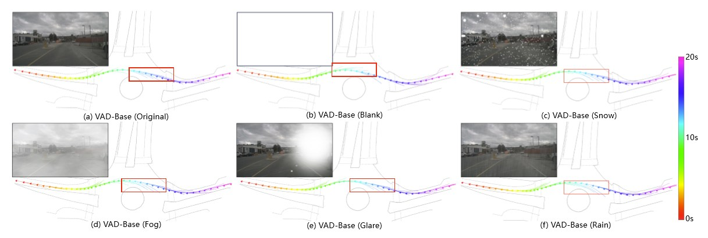
図3：さまざまな画像劣化の下での VAD モデル（プランナで自車状態を取り込む）の予測軌跡を示す。ある 1 つのシーン（20 秒間）内のすべての軌跡をグローバル座標系で示している。各三角形のマーカーは自車の正解軌跡の点を表し、色の違いは異なるタイムステップを表す。注目すべきことに、空白画像を入力とした場合でさえ、モデルの予測軌跡はもっともらしさを保っている。ただし赤枠内の軌跡は最適ではなく、これについては付録でさらに説明する。劣化はすべてのサラウンドビュー画像に適用したが、可視化のため、初期タイムステップにおける対応する前方視点画像のみを表示している。
図中ラベル：Original＝元画像、Blank＝空白、Snow＝雪、Fog＝霧、Glare＝眩光、Rain＝雨、0s／10s／20s＝時刻（カラーバー）
| 手法 | 自車状態 | L2 (m) ↓ | L2-ST (m) ↓ | L2-LR (m) ↓ | ||||||||||
|---|---|---|---|---|---|---|---|---|---|---|---|---|---|---|
| BEV 内 | プランナ内 | 1s | 2s | 3s | Avg. | 1s | 2s | 3s | Avg. | 1s | 2s | 3s | Avg. | |
| BEV-Planner | ✗ | ✗ | 0.30 | 0.52 | 0.83 | 0.55 | 0.27 | 0.47 | 0.78 | 0.48 | 0.43 | 0.78 | 1.23 | 0.81 |
| BEV-Planner+Map | ✗ | ✗ | 0.53 | 0.94 | 1.40 | 0.96 | 0.54 | 0.95 | 1.42 | 0.97 | 0.52 | 0.87 | 1.28 | 0.89 |
表4：L2-ST は直進の運転コマンドにおける L2 距離である。L2-LR は左折／右折コマンドにおける L2 距離である。
| 手法 | 自車状態 | 衝突率 (m) ↓ | 衝突率-ST (m) ↓ | 衝突率-LR (m) ↓ | ||||||||||
|---|---|---|---|---|---|---|---|---|---|---|---|---|---|---|
| BEV 内 | プランナ内 | 1s | 2s | 3s | Avg. | 1s | 2s | 3s | Avg. | 1s | 2s | 3s | Avg. | |
| BEV-Planner | ✗ | ✗ | 0.10 | 0.37 | 1.30 | 0.59 | 0.07 | 0.20 | 0.92 | 0.40 | 0.15 | 1.76 | 4.84 | 2.25 |
| BEV-Planner+Map | ✗ | ✗ | 0.12 | 0.37 | 2.19 | 0.89 | 0.14 | 0.38 | 2.20 | 0.91 | 0.00 | 0.29 | 2.05 | 0.78 |
表5：Collision-ST は直進の運転コマンドにおける衝突率である。Collision-LR は左折／右折コマンドにおける衝突率である。
訳注：表5 の列見出しの単位は原文では "(m)" となっているが、衝突率であり表1 と同じ値（0.10, 0.37, 1.30, 0.59）が並ぶことから "(%)" の誤りと思われる。
自車状態を用いない場合はどうか？自車の状態が計画結果に支配的な影響を及ぼすことを踏まえると、次の重要な問いが生じる。開ループのエンドツーエンド研究において、自車状態を除外することは実現可能で、かつ有益なのか？
知覚段階で見落とされている自車状態。実際、既存手法［16, 43］は、BEV エンコーダで自車状態を用いることが計画に与える影響を無視している。詳細は付録に記す。
自車状態なしでは、単純なほど良いのか？追加の知覚タスク（深度、HD マップ、トラッキングなど）も自車状態も用いない我々の BEV-Planner が、なぜ L2 距離と衝突率において他の手法（ID-1 および 4）よりも良い結果を達成するのか、疑問に思う人もいるだろう。我々の BEV-Planner は CCR の点では性能が低いが、我々のベースラインに地図知覚タスクを追加したらどうなるだろうか。これらの疑問に答えるため、主に UniAD の設計に従って我々のパイプラインに地図知覚タスクを導入した「BEV-Planner+Map」モデルを設計した。表3 に示すように、地図知覚を導入すると、モデルは L2 距離と衝突率の指標でより悪い結果を示す。我々の期待と一致した唯一の点は、地図知覚の導入によって CCR が大きく減少したことである。BEV-Planner と BEV-Planner (init*) の比較から、地図で事前学習した重みを用いると性能が向上しうることがわかる。この知見は、「BEV-Planner+Map」で MapFormer を統合した際に観察される L2 と衝突率の低下が、事前学習済み重みに起因するものではないことを示唆している。我々は、ほとんどの直進シナリオにおいて、車線情報を追加しても顕著に有効な情報は得られず、むしろある程度の干渉をもたらしうると考える。この仮説を検証するため、異なる運転コマンドの下でこれらの手法の性能を評価した。表4 と表5 に示すように、地図情報を追加すると、直進コマンドにおける L2 距離誤差と衝突率が大きく増加する。対照的に、旋回シナリオでは、地図情報を取り込むことで衝突率が効果的に低減する。以上の観察に基づき、暫定的に次の結論を導くことができる。
- 単純な直進走行シナリオでは、知覚情報を追加しても、L2 距離と衝突率に関するモデルの性能は向上しないようである。逆に、より複雑なマルチタスク学習の枠組みを実装すると、実際にはモデル全体の有効性が低下しうる。
- 旋回のようなより複雑なシナリオでは、知覚情報を取り込むことが計画の目的に有益となりうる。しかし、既存の評価データセットにおける旋回シーンの割合は比較的小さい（13%）ため、最終的には、知覚情報の導入は平均的な性能指標（L2 距離と衝突率）に悪影響を及ぼす傾向がある。
- より頑健で代表的な評価データセットを開発することが不可欠である。現在の評価データセットから得られる指標は完全に説得力のあるものではなく、モデルの真の能力を正確に反映できていない。
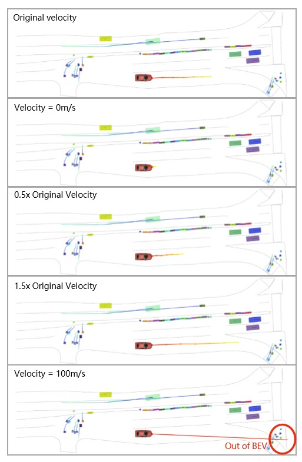
図4：プランナに自車状態を取り込んだ VAD ベースのモデルについて、視覚入力を一定に保ったまま自車速度にノイズを加える。注目すべきことに、自車の速度データに摂動を加えると、得られる軌跡は大きく変化する。車両の速度を 0 に設定すると静止した予測となり、100 m/s の速度ではありえない軌跡が投影される。これは、知覚モジュールが正確な周辺情報を提供し続けているにもかかわらず、モデルの意思決定過程が自車状態に不釣り合いに依存していることを示している。
図中ラベル：Original velocity＝元の速度、Velocity = 0m/s＝速度 0m/s、0.5x Original Velocity＝元の速度の 0.5 倍、1.5x Original Velocity＝元の速度の 1.5 倍、Velocity = 100m/s＝速度 100m/s、Out of BEV＝BEV 範囲外
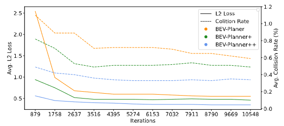
図5：BEV-Planner++ に自車状態を導入すると、モデルは非常に速く収束する。
図中ラベル：Avg. L2 Loss＝平均 L2 損失、Avg. Collision Rate (%)＝平均衝突率 (%)、Iterations＝反復回数、L2 Loss＝L2 損失（実線）、Coltion Rate＝衝突率（破線。原図の綴りのまま）、BEV-Planer＝BEV-Planner（原図の綴りのまま）
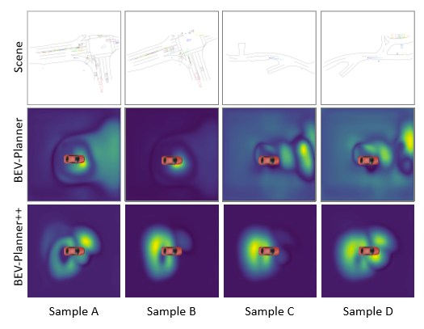
図6：我々のベースラインの BEV 特徴量と、対応するシーンとの比較。
図中ラベル：Scene＝シーン、Sample A〜D＝サンプル A〜D
| 手法 | P.P. | Avg. L2(m) | Avg. Colli.(%) | Avg. CCR(%) |
|---|---|---|---|---|
| UniAD | ✓ | 0.77 | 0.51 | 7.83 |
| UniAD | ✗ | 0.66 | 0.62 | 1.72 |
表6：P.P. は UniAD の後処理最適化モジュールを表す。このアブレーション研究には UniAD の公式公開重みを用いる。UniAD はデフォルトで、他のエージェントとの衝突を緩和することを目的として、エンドツーエンドモデルが予測した軌跡を精緻化する後処理ステップを組み込んでいる。しかしこのアプローチは、この単一の最適化目的に制約されており、車線の遵守など、自動運転における安全上重要な他の要因を見落としている。我々の新しい指標である CCR は、UniAD の後処理によって自車が道路から逸脱するリスクが大幅に高まることを明らかにしている。
新しい指標は新しい結論をもたらす。これまでの方法論は主に L2 距離と衝突率の指標を中心としており、ここまでの我々の議論も主としてこれら 2 つの指標に集中してきた。我々が強調したいのは、L2 距離と衝突率というこれら 2 つの指標は、モデルの計画能力の一部の側面しか反映していないということである。これら 2 つの指標のみに基づいてモデルの品質を評価することは推奨されない。本論文では、モデルの地図の理解と地図への準拠を評価する新しい指標として、縁石衝突率（CCR）を導入する。表1 に示すように、GoStright 方策は頻繁に道路境界と交差することが観察でき、これは我々の予想どおりである。この新しい指標の観点では、Ego-MLP は UniAD や VAD よりも性能が劣る。我々の手法 BEV-Planner は、地図情報を一切用いないため、この指標で最も悪い性能となる。このことは、従来の指標に頼って異なる開ループ手法の優劣を判断することには偏りがあることを示唆している。
提案した新しい指標に基づいて、既存の衝突率指標が後処理によって操作されうることも判明した。より具体的には、UniAD［13］では、エンドツーエンドモデルが予測した軌跡を非線形最適化モジュールによって精緻化し、予想経路が占有グリッドを避けるようにすることで衝突の防止を図っている。しかしこの最適化は、他のエージェントとの衝突率を大きく低減する一方で、意図せず追加の安全上のリスクをもたらす。表6 に示すように、地図の事前情報の統合といった十分な制約が最適化過程にないため、最適化された軌跡が道路境界に侵入するリスクが著しく高まる。本論文では、UniAD の結果はデフォルトで後処理なしのものを報告する。
我々が強調したいのは、CCR を提案する主な意図は、既存の評価体系の不十分さを明らかにすることにあるという点である。しかし、CCR を取り入れたとしても、開ループ評価体系は依然として多くの課題に直面している。我々は、開ループ自動運転システムの評価には、より多様で厳格な評価フレームワークが必要であると主張する。それによって、これらのシステムの能力と限界をより正確に反映できるようになるであろう。
ベースラインは BEV で何を学習したのか？図5 に示すように、自車状態の影響によってモデルは速く収束する。視覚画像から有用な BEV 特徴量を生成することの難しさを考慮し、自車状態を用いない BEV-Planer（訳注：BEV-Planner の誤植と思われる）の収束曲線と比較すると、このことは自車状態の情報が学習過程を支配していることをさらに示している。我々のベースラインは自車軌跡のみによって教師付けされているため、モデルが画像から何を学習しているのかが気になるところである。図6 に示すように、我々は特徴的な現象を観察した。BEV-Planner++ では、特徴マップの活性化範囲は主に自車のすぐ周辺を覆っており、車両自体の後方に現れることも多い。このパターンは、通常は車両前方の領域に集中する BEV-Planner の BEV 特徴量とは大きく異なる。我々は、これは自車状態の情報を導入したことで、モデルが BEV 特徴量から情報を抽出する必要がなくなったためであると推測する。したがって、BEV-Planner++ 手法は有効な情報をほとんど学習していない。
5 結論
本論文では、現在の開ループのエンドツーエンド自動運転手法に内在する欠点について詳細な分析を提示した。我々の目的は、エンドツーエンド自動運転の漸進的な発展を促す知見を提供することである。
我々の結論は以下のようにまとめられる。
- nuScenes に基づく既存の開ループ自動運転モデルの計画性能は、自車状態（速度、加速度、ヨー角）に強く影響される。自車状態が関与すると、モデルが最終的に予測する軌跡は基本的にそれによって支配され、センサ情報の利用が減少する。
- 既存の計画指標は、モデルの真の性能を十分に捉えきれていない。モデルの評価結果は指標によって大きく異なりうる。我々は、特定の指標でモデルが局所最適を達成してしまい、その結果として他の安全上の危険が見過ごされることを防ぐため、より多様で包括的な指標の採用を提唱する。
- 既存の nuScenes データセット上で最先端の性能を押し上げることと比べて、より適切なデータセットと指標を開発することのほうが、取り組むべきより重要かつ緊急の課題であると我々は主張する。
限界。異なる計画指標の間にはトレードオフが存在する。開ループ評価のための統合的な評価体系を設計することは大きな課題である。我々のベースライン手法は L2 距離と衝突率の点では優れているが、CCR での性能は際立ったものではない。これは主に、我々の手法が HD マップなどの知覚アノテーションを一切利用していないためである。
謝辞
有益な情報と VAD のモデル重みを提供してくださった Bencheng Liao 氏と Shaoyu Chen 氏に感謝する。Tong Lu と Zhiqi Li は、中国国家自然科学基金（Grant No. 62372223）および China Mobile Zijin Innovation Insititute（No. NR2310J7M）の支援を受けている。Zhiqi Li はまた NVIDIA Graduate Fellowship Program の支援も受けている。
参考文献
参考文献は原文のまま掲載した（各項目末尾の被引用ページ番号は省略）。
- Mariusz Bojarski, Davide Del Testa, Daniel Dworakowski, Bernhard Firner, Beat Flepp, Prasoon Goyal, Lawrence D Jackel, Mathew Monfort, Urs Muller, Jiakai Zhang, et al. End to end learning for self-driving cars. arXiv preprint arXiv:1604.07316, 2016.
- Holger Caesar, Varun Bankiti, Alex H Lang, Sourabh Vora, Venice Erin Liong, Qiang Xu, Anush Krishnan, Yu Pan, Giancarlo Baldan, and Oscar Beijbom. nuscenes: A multimodal dataset for autonomous driving. In CVPR, 2020.
- Sergio Casas, Abbas Sadat, and Raquel Urtasun. Mp3: A unified model to map, perceive, predict and plan. In CVPR, 2021.
- Li Chen, Chonghao Sima, Yang Li, Zehan Zheng, Jiajie Xu, Xiangwei Geng, Hongyang Li, Conghui He, Jianping Shi, Yu Qiao, et al. Persformer: 3d lane detection via perspective transformer and the openlane benchmark. In European Conference on Computer Vision, pages 550–567. Springer, 2022.
- Li Chen, Penghao Wu, Kashyap Chitta, Bernhard Jaeger, Andreas Geiger, and Hongyang Li. End-to-end autonomous driving: Challenges and frontiers. arXiv preprint arXiv:2306.16927, 2023.
- Laurene Claussmann, Marc Revilloud, Dominique Gruyer, and Sébastien Glaser. A review of motion planning for highway autonomous driving. IEEE Transactions on Intelligent Transportation Systems, 21(5):1826–1848, 2019.
- Dmitri Dolgov, Sebastian Thrun, Michael Montemerlo, and James Diebel. Practical search techniques in path planning for autonomous driving. Ann Arbor, 1001(48105):18–80, 2008.
- Alexey Dosovitskiy, German Ros, Felipe Codevilla, Antonio Lopez, and Vladlen Koltun. Carla: An open urban driving simulator. 2017.
- Junru Gu, Chenxu Hu, Tianyuan Zhang, Xuanyao Chen, Yilun Wang, Yue Wang, and Hang Zhao. Vip3d: End-to-end visual trajectory prediction via 3d agent queries. In Proceedings of the IEEE/CVF Conference on Computer Vision and Pattern Recognition, pages 5496–5506, 2023.
- Kaiming He, Xiangyu Zhang, Shaoqing Ren, and Jian Sun. Deep residual learning for image recognition. In CVPR, 2016.
- Peiyun Hu, Aaron Huang, John Dolan, David Held, and Deva Ramanan. Safe local motion planning with self-supervised freespace forecasting. In Proceedings of the IEEE/CVF Conference on Computer Vision and Pattern Recognition, pages 12732–12741, 2021.
- Shengchao Hu, Li Chen, Penghao Wu, Hongyang Li, Junchi Yan, and Dacheng Tao. St-p3: End-to-end vision-based autonomous driving via spatial-temporal feature learning. In European Conference on Computer Vision, pages 533–549. Springer, 2022.
- Yihan Hu, Jiazhi Yang, Li Chen, Keyu Li, Chonghao Sima, Xizhou Zhu, Siqi Chai, Senyao Du, Tianwei Lin, Wenhai Wang, et al. Planning-oriented autonomous driving. In Proceedings of the IEEE/CVF Conference on Computer Vision and Pattern Recognition, pages 17853–17862, 2023.
- Junjie Huang and Guan Huang. BEVDet4D: Exploit temporal cues in multi-camera 3d object detection. arXiv preprint arXiv:2203.17054, 2022.
- Linyan Huang, Zhiqi Li, Chonghao Sima, Wenhai Wang, Jingdong Wang, Yu Qiao, and Hongyang Li. Leveraging vision-centric multi-modal expertise for 3d object detection. arXiv preprint arXiv:2310.15670, 2023.
- Bo Jiang, Shaoyu Chen, Qing Xu, Bencheng Liao, Jiajie Chen, Helong Zhou, Qian Zhang, Wenyu Liu, Chang Huang, and Xinggang Wang. Vad: Vectorized scene representation for efficient autonomous driving. arXiv preprint arXiv:2303.12077, 2023.
- Tarasha Khurana, Peiyun Hu, Achal Dave, Jason Ziglar, David Held, and Deva Ramanan. Differentiable raycasting for self-supervised occupancy forecasting. In European Conference on Computer Vision, pages 353–369. Springer, 2022.
- Hongyang Li, Chonghao Sima, Jifeng Dai, Wenhai Wang, Lewei Lu, Huijie Wang, Enze Xie, Zhiqi Li, Hanming Deng, Hao Tian, et al. Delving into the devils of bird's-eye-view perception: A review, evaluation and recipe. arXiv preprint arXiv:2209.05324, 2022.
- Quanyi Li, Zhenghao Peng, Lan Feng, Qihang Zhang, Zhenghai Xue, and Bolei Zhou. Metadrive: Composing diverse driving scenarios for generalizable reinforcement learning. IEEE transactions on pattern analysis and machine intelligence, 45(3):3461–3475, 2022.
- Qi Li, Yue Wang, Yilun Wang, and Hang Zhao. Hdmapnet: An online hd map construction and evaluation framework. 2022.
- Yinhao Li, Zheng Ge, Guanyi Yu, Jinrong Yang, Zengran Wang, Yukang Shi, Jianjian Sun, and Zeming Li. BEVDepth: Acquisition of reliable depth for multi-view 3d object detection. arXiv preprint arXiv:2206.10092, 2022.
- Zhiqi Li, Wenhai Wang, Hongyang Li, Enze Xie, Chonghao Sima, Tong Lu, Qiao Yu, and Jifeng Dai. BEVFormer: Learning bird's-eye-view representation from multi-camera images via spatiotemporal transformers. arXiv preprint arXiv:2203.17270, 2022.
- Zhiqi Li, Zhiding Yu, David Austin, Mingsheng Fang, Shiyi Lan, Jan Kautz, and Jose M Alvarez. Fb-occ: 3d occupancy prediction based on forward-backward view transformation. arXiv preprint arXiv:2307.01492, 2023.
- Zhiqi Li, Zhiding Yu, Wenhai Wang, Anima Anandkumar, Tong Lu, and Jose M Alvarez. Fb-bev: Bev representation from forward-backward view transformations. In Proceedings of the IEEE/CVF International Conference on Computer Vision, pages 6919–6928, 2023.
- Bencheng Liao, Shaoyu Chen, Xinggang Wang, Tianheng Cheng, Qian Zhang, Wenyu Liu, and Chang Huang. Maptr: Structured modeling and learning for online vectorized hd map construction. arXiv preprint arXiv:2208.14437, 2022.
- Xuewu Lin, Tianwei Lin, Zixiang Pei, Lichao Huang, and Zhizhong Su. Sparse4d v2: Recurrent temporal fusion with sparse model. arXiv preprint arXiv:2305.14018, 2023.
- Haisong Liu, Yao Teng, Tao Lu, Haiguang Wang, and Limin Wang. Sparsebev: High-performance sparse 3d object detection from multi-camera videos. In Proceedings of the IEEE/CVF International Conference on Computer Vision, pages 18580–18590, 2023.
- Yingfei Liu, Junjie Yan, Fan Jia, Shuailin Li, Qi Gao, Tiancai Wang, Xiangyu Zhang, and Jian Sun. PETRv2: A unified framework for 3d perception from multi-camera images. arXiv preprint arXiv:2206.01256, 2022.
- Yicheng Liu, Tianyuan Yuan, Yue Wang, Yilun Wang, and Hang Zhao. Vectormapnet: End-to-end vectorized hd map learning. In International Conference on Machine Learning, pages 22352–22369. PMLR, 2023.
- Jinhyung Park, Chenfeng Xu, Shijia Yang, Kurt Keutzer, Kris Kitani, Masayoshi Tomizuka, and Wei Zhan. Time will tell: New outlooks and a baseline for temporal multi-view 3d object detection. arXiv preprint arXiv:2210.02443, 2022.
- Jonah Philion and Sanja Fidler. Lift, splat, shoot: Encoding images from arbitrary camera rigs by implicitly unprojecting to 3d. In ECCV, 2020.
- Aditya Prakash, Kashyap Chitta, and Andreas Geiger. Multi-modal fusion transformer for end-to-end autonomous driving. In Proceedings of the IEEE/CVF Conference on Computer Vision and Pattern Recognition, pages 7077–7087, 2021.
- Abbas Sadat, Sergio Casas, Mengye Ren, Xinyu Wu, Pranaab Dhawan, and Raquel Urtasun. Perceive, predict, and plan: Safe motion planning through interpretable semantic representations. In Computer Vision–ECCV 2020: 16th European Conference, Glasgow, UK, August 23–28, 2020, Proceedings, Part XXIII 16, pages 414–430. Springer, 2020.
- Hao Shao, Letian Wang, Ruobing Chen, Hongsheng Li, and Yu Liu. Safety-enhanced autonomous driving using interpretable sensor fusion transformer. In Conference on Robot Learning, pages 726–737. PMLR, 2023.
- Ardi Tampuu, Tambet Matiisen, Maksym Semikin, Dmytro Fishman, and Naveed Muhammad. A survey of end-to-end driving: Architectures and training methods. IEEE Transactions on Neural Networks and Learning Systems, 33(4):1364–1384, 2020.
- Ashish Vaswani, Noam Shazeer, Niki Parmar, Jakob Uszkoreit, Llion Jones, Aidan N Gomez, Łukasz Kaiser, and Illia Polosukhin. Attention is all you need. In NeurIPS, 2017.
- Li Wang, Xinyu Zhang, Baowei Xv, Jinzhao Zhang, Rong Fu, Xiaoyu Wang, Lei Zhu, Haibing Ren, Pingping Lu, Jun Li, et al. Interfusion: Interaction-based 4d radar and lidar fusion for 3d object detection. In 2022 IEEE/RSJ International Conference on Intelligent Robots and Systems (IROS), pages 12247–12253. IEEE, 2022.
- Ruihao Wang, Jian Qin, Kaiying Li, Yaochen Li, Dong Cao, and Jintao Xu. Bev-lanedet: An efficient 3d lane detection based on virtual camera via key-points. In Proceedings of the IEEE/CVF Conference on Computer Vision and Pattern Recognition, pages 1002–1011, 2023.
- Shihao Wang, Yingfei Liu, Tiancai Wang, Ying Li, and Xiangyu Zhang. Exploring object-centric temporal modeling for efficient multi-view 3d object detection. arXiv preprint arXiv:2303.11926, 2023.
- Penghao Wu, Xiaosong Jia, Li Chen, Junchi Yan, Hongyang Li, and Yu Qiao. Trajectory-guided control prediction for end-to-end autonomous driving: A simple yet strong baseline. Advances in Neural Information Processing Systems, 35:6119–6132, 2022.
- Enze Xie, Zhiding Yu, Daquan Zhou, Jonah Philion, Anima Anandkumar, Sanja Fidler, Ping Luo, and Jose M Alvarez. M2BEV: Multi-camera joint 3d detection and segmentation with unified birds-eye view representation. arXiv preprint arXiv:2204.05088, 2022.
- Chenyu Yang, Yuntao Chen, Hao Tian, Chenxin Tao, Xizhou Zhu, Zhaoxiang Zhang, Gao Huang, Hongyang Li, Yu Qiao, Lewei Lu, et al. Bevformer v2: Adapting modern image backbones to bird's-eye-view recognition via perspective supervision. In Proceedings of the IEEE/CVF Conference on Computer Vision and Pattern Recognition, pages 17830–17839, 2023.
- Tengju Ye, Wei Jing, Chunyong Hu, Shikun Huang, Lingping Gao, Fangzhen Li, Jingke Wang, Ke Guo, Wencong Xiao, Weibo Mao, et al. Fusionad: Multi-modality fusion for prediction and planning tasks of autonomous driving. arXiv preprint arXiv:2308.01006, 2023.
- Tianyuan Yuan, Yicheng Liu, Yue Wang, Yilun Wang, and Hang Zhao. Streammapnet: Streaming mapping network for vectorized online hd map construction. arXiv preprint arXiv:2308.12570, 2023.
- Jiang-Tian Zhai, Ze Feng, Jinhao Du, Yongqiang Mao, Jiang-Jiang Liu, Zichang Tan, Yifu Zhang, Xiaoqing Ye, and Jingdong Wang. Rethinking the open-loop evaluation of end-to-end autonomous driving in nuscenes. arXiv preprint arXiv:2305.10430, 2023.
Is Ego Status All You Need for Open-Loop End-to-End Autonomous Driving?
補足資料（Supplementary Material）
訳注：補足資料の図表番号は原文どおり 1 から振り直されている（本文の図1〜6・表1〜6 とは別）。区別のため、以下では「補足図」「補足表」と表記する。
A 実装の詳細
ST-P3 は部分的に誤った学習・評価データを用いている。一般的な慣行では、将来の GT 計画軌跡は、後続 3 秒間のサンプルにおける自車位置から生成される。しかし、nuScenes の 1 クリップは通常 20 秒の動画であるため、動画の末尾（17 秒〜20 秒の範囲）のサンプルでは完全な将来軌跡を生成できない。通常の手法［13, 16］はこうした特殊なサンプルに対してマスクを用いた特別な処理を行うが、ST-P3［12］はこれを行っていなかった。ST-P3 はこれら末尾のサンプルの GT を生成する際に他のシーンのサンプルを誤って用いたため、学習と評価で誤りが生じた。関連する issue：https://github.com/OpenDriveLab/ST-P3/issues/24。
自車状態の使用に関する詳細。UniAD（ID-1）と VAD-Base（ID-4）については、鳥瞰図（BEV）の生成段階から自車状態を除外するため、use_can_bus フラグを False に設定した。逆に UniAD（ID-3）については、プランナに自車状態を組み込むため、自車状態ベクトルをクエリ特徴量と連結するという VAD で用いられている方法に従った。
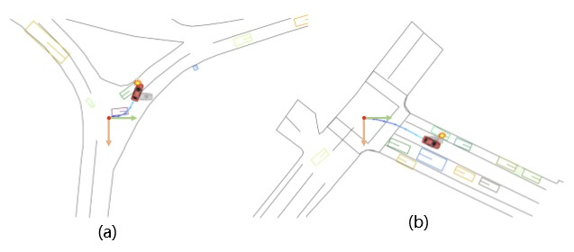
補足図1：現在の手法［12, 13, 16］は自車のヨー角の変化を考慮しておらず、常にヨー角を 0 に保っている（灰色の車両で図示）。その結果、衝突検出において (a) では偽陰性、(b) では偽陽性の発生が増加する。本論文では、軌跡の変化から車両のヨー角を推定する（赤色の車両で図示）ことで、衝突検出の精度を改善する。
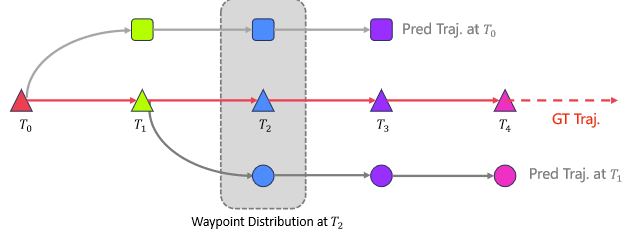
補足図2：開ループの自動運転手法では、将来軌跡は自車の開始位置から予測される。模倣学習の枠組みでは、予測軌跡は理想的には実際の正解軌跡とよく一致するべきである。さらに、連続するタイムステップで予測される軌跡は一貫性を保ち、それによって運転戦略の連続性と滑らかさを保証するべきである。したがって、（本文の）図3 の赤枠で示した予測軌跡は、正解軌跡から逸脱しているだけでなく、異なるタイムスタンプ間で大きな食い違いも示している。
図中ラベル：Pred Traj. at \(T_0\)＝時刻 \(T_0\) における予測軌跡、Pred Traj. at \(T_1\)＝時刻 \(T_1\) における予測軌跡、GT Traj.＝正解軌跡、Waypoint Distribution at \(T_2\)＝時刻 \(T_2\) におけるウェイポイントの分布
B 評価指標の詳細
衝突率。現在の手法は計画軌跡の衝突率を評価する傾向にある［11–13, 16, 17, 43］が、既存手法におけるこの指標には定義と実装の両面で問題がある。第一に、開ループのエンドツーエンド自動運転では、他のエージェントは自車に反応しない。代わりに、あらかじめ決められた軌跡に厳密に従う。その結果、衝突率の計算に偏りが生じる。第二の問題は、現在の手法が生成する計画予測が一連の軌跡点のみから構成されることに起因する。そのため、最終的な衝突計算において自車のヨー角は考慮されない。代わりに、ヨー角は変化しないと仮定される。補足図1 に示すように、この仮定は特に旋回シナリオにおいて誤った結果をもたらす。
現在の実装にも問題がある。現在の各サンプルの衝突率の定義は次のとおりである。
\[ CR(t) = \frac{\sum_{i=0}^{N} \mathbb{I}_i}{N}, N = t/0.5, \tag{2} \]
\(N\) は \(t\) 秒間におけるステップ数を表し、\(\mathbb{I}_i\) はステップ \(i\) において自車が他のエージェントと交差するかどうかを表す。本論文では、衝突の定義を次のように変更する。
\[ CR(t) = (\sum_{i=0}^{N} \mathbb{I}_i) \gt 0, N = t/0.5. \tag{3} \]
従来の実装では、各時刻における衝突は互いに独立であると仮定されていたが、これは実世界のシナリオと合致しない。我々の修正版は、予測軌跡に沿って発生する衝突率をより正確に示す値を与える。
| 手法 | L2 (m) ↓ | \((\sigma_{wd})\) ↓ | ||||||
|---|---|---|---|---|---|---|---|---|
| 1s | 2s | 3s | Avg. | 1s | 2s | 3s | Avg. | |
| Baseline（ベースライン） | 0.30 | 0.52 | 0.85 | 0.56 | 0.03 | 0.19 | 0.70 | 0.31 |
補足表1：予測軌跡の滑らかさ \(\sigma_{wd}\)。
軌跡の滑らかさ。モデルの予測軌跡の安定性も評価した。モデルは各時刻で次の 3 秒間の軌跡を予測するため、すべての絶対時刻 \(t\) について、モデルはそれ以前のさまざまな時刻から時刻 \(t\) における複数のウェイポイントを予測したことになる。我々はこれらの異なるウェイポイントを 1 つの分布とみなす。極端でない条件下では、補足図2 に示すように、運転過程の滑らかさを保証するため、この分布はできるだけ集中しているべきである。この分布を定量的に分析するため、補足表1 に示すように、これらの分布点の二乗偏差距離を計算した。この滑らかさの指標は L2 指標以上の情報をもたらさないことがわかり、指標の合理性を検証するにはさらなる探究が必要であると我々は考えている。
有効サンプル。完全な GT 軌跡を持たない末尾のサンプルについては上で論じた。通常の手法は、特別な識別のためにマスクを用いる。評価の際、従来の手法の処理方法はさまざまである。一つは、サンプルが完全な GT 将来軌跡を持たない場合、そのサンプルを評価で考慮しないというものである。二つ目の方策は、GT 軌跡の長さが 3 秒未満の場合、GT 将来軌跡の有効な部分のみを考慮するというものである。本論文では一つ目の方策に従う。nuScenes の val 分割の 6019 サンプルのうち、最終的な有効サンプル数は 5119（全サンプルの 85%）である。我々が ST-P3 の正しい版を再現しなかった理由は、ST-P3 の有効サンプルの定義が他と異なるためである。ST-P3 の有効サンプルは十分な過去データを用いる必要があるため、ST-P3 は各クリップの最初の数サンプルについては軌跡を予測しない。たとえ正しい ST-P3 を再現したとしても、他の手法と公平に比較することはできない。
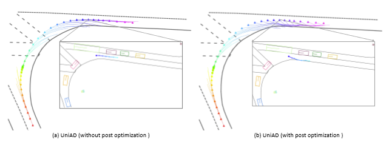
補足図3：衝突をできる限り回避するため、UniAD［13］では予測軌跡を他の車両から遠ざける事後最適化が導入されている。しかし実際の交通走行では、道路状況など他の要因も考慮する必要がある。図 (b) に示すように、UniAD は対向車線によって生じうる危険を回避するために道路境界へ突進し、実際には別の事故を引き起こした。
図中ラベル：UniAD (without post optimization)＝UniAD（事後最適化なし）、UniAD (with post optimization)＝UniAD（事後最適化あり）
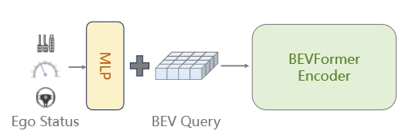
補足図4：BEVFormer は BEV クエリの初期化の際に自車状態の情報を取り込んでいるが、これは現在のエンドツーエンド自動運転手法［13, 16, 43］では扱われていない細部である。
図中ラベル：Ego Status＝自車状態、BEV Query＝BEV クエリ、BEVFormer Encoder＝BEVFormer エンコーダ
C 知覚段階で見落とされている自車状態
実際、重要な問いは、その手法が本当に自車状態の影響を完全に排除しているかどうかである。既存の開ループのエンドツーエンド自動運転手法［12, 13, 16, 43］のパイプラインは、基本的に（本文の）図1 (b) に従っている。自車状態が計画結果に大きな影響を及ぼすことを踏まえ、これらの手法は、プランナに自車状態を導入するかどうかについては実際に明確な説明をしている。しかし、手法［13, 16］は、初期の知覚段階で自車状態を導入することが計画結果に与える影響を無視していた。具体的には、UniAD［13］と VAD［16］はいずれも BEV 生成モジュールとして BEVFormer［22］を用いている。BEVFormer では、補足図4 に示すように、自車状態を隠れ特徴量に射影して BEV クエリに組み込む。補足表2 に示すように、この工夫が知覚性能に与える影響はわずかである。しかし、BEVFormer をエンドツーエンドのパイプラインに統合すると、この初期段階での自車状態の導入は最終的な計画性能に大きな影響を及ぼしうる。（本文の）表1 に示すように、BEV 段階で自車状態の入力を取り除くと、VAD と UniAD の両方の計画性能が顕著に低下する。明確にしておきたいのは、我々の立場は自車状態の使用に反対するものではないということである。むしろ、現在のデータセットと評価指標の文脈においては、自車状態の統合が計画結果に大きな影響を与え、さらにはそれを決定づけてしまいうると主張しているのである。残念ながら、既存のエンドツーエンド自動運転手法では、知覚モジュール内での自車状態の取り込みはしばしば見落とされている。したがって、異なる手法の比較分析においては、評価の公平性と一貫性を確保するため、自車状態の役割と影響を慎重に検討することが不可欠である。
| 手法 | 自車状態 | mAP↑ | NDS↑ |
|---|---|---|---|
| BEVFormer | ✓ | 41.6 | 51.7 |
| BEVFormer | ✗ | 41.3 | 51.5 |
補足表2：BEVFormer 内で自車状態を統合しても、知覚性能への影響はわずかである。
D UniAD の事後最適化
補足図3 に示すように、UniAD は衝突最適化を利用しているが、その結果得られる最適化後の軌跡は道路境界とより高い割合で交差する傾向があることが観察される。これは、衝突最適化器が地図の事前情報を見落としているために生じる。衝突を避けようとするあまり、最適化器は安全上のリスクをもたらしうる他の要因を無視してしまう。しかし、仮に最適化器が関連するすべての要因を考慮するとしたら、それは従来の計画・ナビゲーション制御（PNC）システムにより近いものとなり、エンドツーエンド自動運転の根本的な動機に反することになる。
E カメラの除去
本論文の表2 を参照すると、VAD が自車状態を入力として取り込んでいる場合、カメラ入力を取り除いても性能は顕著には損なわれないことがわかる。自車状態を用いない VAD［16］についても同様の実験を行った。可視化結果も補足図5 に示す。補足表3 に示すように、自車状態を用いない VAD でカメラ入力を除外すると、特に L2 距離と衝突率の指標において性能が大きく低下する。興味深いことに、この低下は道路境界との交差率の指標には反映されなかった。
実際、自車状態を用いず、かつカメラ入力を取り除いた状態でモデルが動作する場合、モデルは将来の進行方向を決めるのに運転コマンドのみに頼ることになる。このシナリオで道路境界との交差率が増加しないという事実は直感に反する。この直感に反する現象をきっかけに、我々は評価過程をより深く調べた。補足表4 に示すように、異なる運転コマンドの下での交差指標の統計を集計した。Intersection-LR 指標は、カメラ入力なしで動作するモデルが、旋回シナリオにおいて境界と接触する確率を大きく高めることを示している。これは可視化から得られた我々の観察とも一致する。真の理由は、直進シナリオ（全評価サンプルの 87%）では、カメラ入力を取り除くとモデルが比較的保守的な直進戦略をとるようになり、道路境界と交差しにくくなる（Intersection-ST が示すとおり）ことにある。直進シナリオは val 分割の大きな割合を占めるため、結果としてカメラ入力なしで動作するときのほうが、モデルは全体の平均でより良い結果を達成することになる。
訳注：補足表4 の数値では、カメラ入力を除去すると CCR-ST（直進）が 9.13 から 17.6 に増加し、CCR-LR（旋回）が 3.05 から 1.69 に減少しており、本段落の記述（旋回で増加し、直進で交差しにくくなる）とは逆の傾向になっている。表の ST／LR の列が入れ替わっているか、本文の記述に誤りがある可能性がある。また、ここでの直進の割合「87%」は、本文 1 節の 73.9% や 4.3 節の旋回シーン 13% と数値の基準が異なる可能性がある。いずれも原文のまま訳出した。
失敗事例。nuScenes データセットのシナリオの大部分は比較的単純であるが、特に連続したコーナリングを伴うものなど、いくつかの困難なシーンも含まれている。補足図6 に示すように、さまざまな設定の手法が、いずれも曲率の大きいカーブを通過する際に最適でない予測軌跡を生成したことが観察できる。システムが継続的に変化する意思決定を行わなければならないコーナリングのような困難なシナリオでは、開ループの自動運転システムを評価することは大きな課題となる。開ループ手法の限界の一つは、累積誤差の影響を受けないことである。詳しく言えば、あるタイムステップで極端に誤った軌跡が予測された場合でも、次のタイムステップにおける軌跡の開始点は依然として GT 軌跡に基づいている。我々が用いる指標 CCR は、低品質な軌跡を識別するのに適している。しかし、高品質な軌跡を効果的に際立たせることのできる適切な指標は、さらなる探究に値する興味深い方向性として残されている。
| 手法 | 画像の劣化 | 自車状態 | L2 (m) ↓ | 衝突率 (%) ↓ | 交差率（Intersetion）(%) ↓ | 検出 | 地図 | |||||||||
|---|---|---|---|---|---|---|---|---|---|---|---|---|---|---|---|---|
| 1s | 2s | 3s | Avg. | 1s | 2s | 3s | Avg. | 1s | 2s | 3s | Avg. | (NDS) | (mAP) | |||
| VAD-Base | - | ✓ | 0.17 | 0.34 | 0.60 | 0.37 | 0.04 | 0.27 | 0.67 | 0.33 | 0.21 | 2.13 | 5.06 | 2.47 | 45.5 | 47.0 |
| VAD-Base | Blank（空白） | ✓ | 0.19 | 0.41 | 0.77 | 0.46 | 0.00 | 0.40 | 1.21 | 0.54 | 0.35 | 3.05 | 7.73 | 3.71 | 0.0 | 0.0 |
| VAD-Base | - | ✗ | 0.69 | 1.22 | 1.83 | 0.06 | 0.68 | 2.52 | 0.84 | 0.37 | 1.02 | 3.44 | 7.00 | 3.82 | 45.1 | 53.7 |
| VAD-Base | Blank（空白） | ✗ | 2.59 | 4.32 | 6.09 | 4.33 | 2.29 | 7.89 | 12.7 | 7.63 | 1.07 | 3.73 | 6.64 | 3.81 | 0.0 | 0.0 |
補足表3：自車状態を利用しない場合の VAD モデルでカメラ入力を省くと、L2 距離と衝突率の指標が示すとおり、性能が顕著に低下する。
訳注：3 行目（自車状態なし、劣化なし）の L2 平均 "0.06" および衝突率 "0.68, 2.52, 0.84, 0.37" は原文のままである。本文の表1 の ID-4（VAD-Base、自車状態なし）では L2 が 0.69/1.22/1.83/1.25、衝突率が 0.06/0.68/2.52/1.09 であり、本表の該当行は値が 1 列ずれる・混在するなどの転記誤りがあると思われる。列見出しの "Intersetion" も原文の綴り（Intersection の誤植）である。
| 手法 | 画像の劣化 | 自車状態 | CCR ↓ | CCR-ST (%) ↓ | CCR-LR (%) ↓ | 検出 | 地図 | |||||||||
|---|---|---|---|---|---|---|---|---|---|---|---|---|---|---|---|---|
| 1s | 2s | 3s | Avg. | 1s | 2s | 3s | Avg. | 1s | 2s | 3s | Avg. | (NDS) | (mAP) | |||
| VAD-Base | - | ✗ | 1.02 | 3.44 | 7.00 | 3.82 | 2.49 | 8.50 | 16.4 | 9.13 | 0.95 | 2.70 | 5.50 | 3.05 | 45.1 | 53.7 |
| VAD-Base | Blank（空白） | ✗ | 1.07 | 3.73 | 6.64 | 3.81 | 2.63 | 18.2 | 32.1 | 17.6 | 0.83 | 1.51 | 2.72 | 1.69 | 0.0 | 0.0 |
補足表4：CCR-ST は直進の運転コマンドにおける CCR、CCR-LR は左折／右折コマンドにおける CCR である。
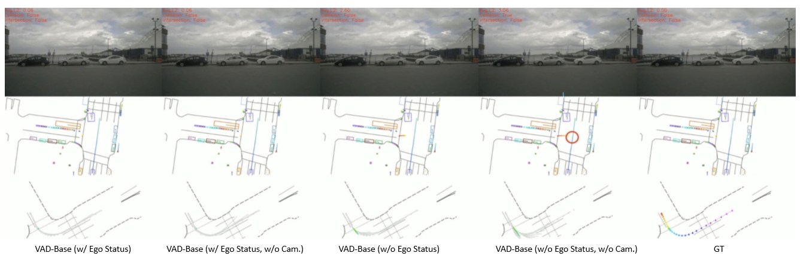
補足図5：モデルが自車状態を入力として用いる場合、カメラを取り除いても性能に大きな影響はない。しかし自車状態がない場合、カメラ入力を省くとモデルは誤った計画をしやすくなる。赤丸は潜在的な衝突を示す。
図中ラベル：VAD-Base (w/ Ego Status)＝VAD-Base（自車状態あり）、VAD-Base (w/ Ego Status, w/o Cam.)＝VAD-Base（自車状態あり、カメラなし）、VAD-Base (w/o Ego Status)＝VAD-Base（自車状態なし）、VAD-Base (w/o Ego Status, w/o Cam.)＝VAD-Base（自車状態なし、カメラなし）、GT＝正解
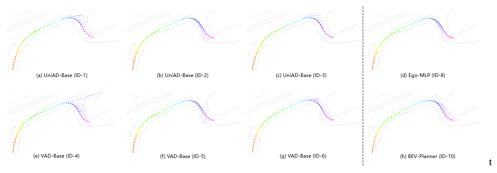
補足図6：連続した旋回を必要とするシナリオでは、すべての手法が最適でない軌跡を予測する。
図中ラベル：各パネルの名称は手法名と本文の表1 の ID（例：(a) UniAD-Base (ID-1)、(d) Ego-MLP (ID-8)、(h) BEV-Planner (ID-10)）。